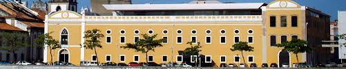
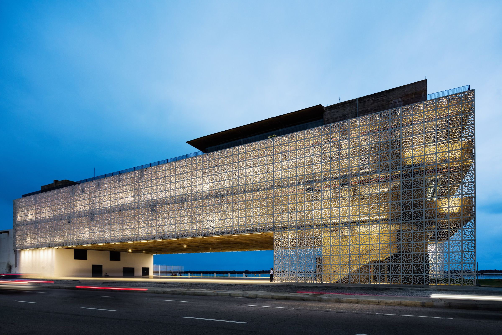

Paço Alfandega
O Paço Alfândega é um verdadeiro retrato da memória urbana da cidade do Recife. Localizado às margens do Rio Capibaribe, no coração do Recife antigo, sua construção data de 1732. Neste local, funcionou, desde a ocupação holandesa, o Porto de Recife, considerado no século XVIII o porto mais movimentado das Américas. O prédio que abrigou durante quase 100 anos o Convento dos padres da Ordem de São Felipe Néri (Convento dos Oratorianos), a partir de 1826, passou a funcionar como sede da Alfândega. Hoje, o Paço funciona com um hub criativo, integrando varejo, cultura, serviços, tecnologia e negócios.
Museu Cais do Sertão
Um dos mais modernos equipamentos culturais do Brasil, o Cais do Sertão, instalado no antigo Armazém 10 do Porto do Recife, é um local de convivência, diversão e conhecimento, polo gerador de novas ideias e experiências. Abrigando e reverenciando a obra de Luiz Gonzaga, o grande homenageado do espaço, traz para a beira-mar da capital do estado um pouco do solo rico e generoso da cultura popular do sertão. O museu está localizado na Avenida Alfredo Lisboa, S/N, no Recife Antigo. Conta com atrações e ambientes como a Sala do Imbalança, o Sertãomundo, a Casa do Transtempo, a Sala de Poesia, o Túnel do Capeta, o Túnel das Origens, cabines de Karaokê, dentre outros.
